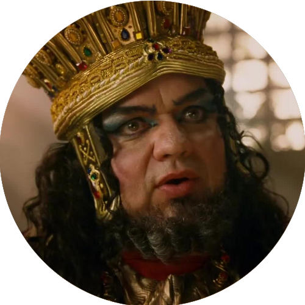
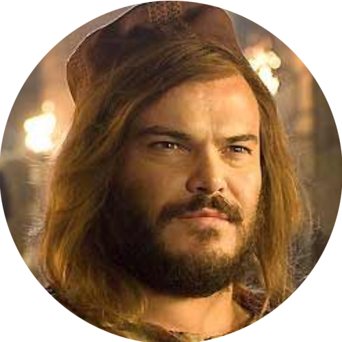
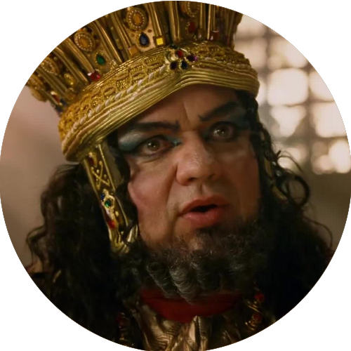
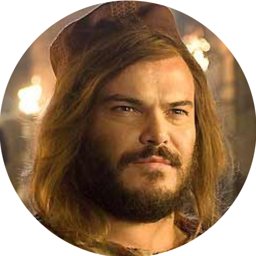

Ano um (2009)

Direção: Harold Ramis
Distribuição: Columbia Pictures
Lançamento:
 19 de junho de 2009
19 de junho de 2009
 25 de setembro de 2009
25 de setembro de 2009  ASSISTIR
ASSISTIR
Personagens
 

Direção: Harold Ramis
Distribuição: Columbia Pictures
Lançamento:
19 de junho de 2009
25 de setembro de 2009 ASSISTIR
 